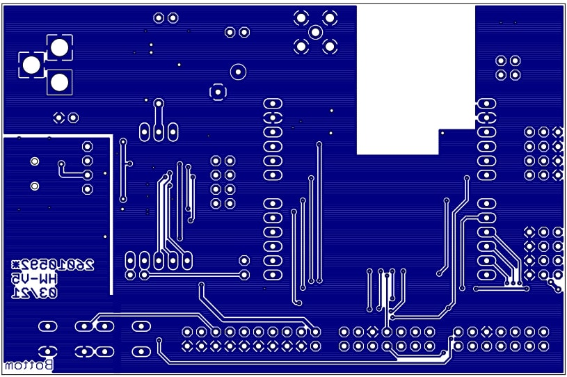

Real-time LoRa telemetry system for a stratospheric weather balloon, integrating STM32 microcontrollers and long-range RF communication.
GitHub
LoRa Balloon

Mechatronics • Robotics • Signal Processing • Embedded Systems
Mechatronics Engineering student at THWS, I build reliable automation and intelligent control systems—whether it’s LoRa links for stratospheric balloons or sensor filters for marine probes.
I thrive on solving tricky engineering problems, quickly mastering new tools, and creating reliable, effective solutions. Off-duty, you'll find me hiking German trails, capturing landscape & astronomy photos.
Engineering Research Student at THWS developing LoRa telemetry links for stratospheric balloons using STM32 and RF modules.
Engineering Working Student at Schienen Güter Logistik – automated sorting in Python, eliminating manual processing tasks.
Real-time LoRa telemetry system for a stratospheric weather balloon, integrating STM32 microcontrollers and long-range RF communication.
GitHub
Autonomous ultrasonic sensing system for seabottom detection in turbid Baltic Sea conditions, employing embedded systems, signal filtering, and 3D-printed mechanical design.
GitHub
Full-state feedback controller designed to stabilize and reject disturbances in a ball-on-a-beam system using MATLAB/Simulink.
GitHub

Optimized a two-component bearing assembly for high-speed spindle applications.
Implemented a Genetic Algorithm driven demo where UFOs learn over successive generations to land on a randomly positioned moon.
Computed the controllability matrix in Python (see GitHub) and implemented full-state feedback control; drag the dot on the Y-axis to tune the set-point.